UneONG
Descubra e apoie ONGs reais, perto de você. Junte-se a quem já está fazendo a diferença.

Encontre ONGs perto de você
Explore com ou sem conta e descubra sobre as mais diversas ONGs da região de Itu, salve as postagens que mais te interessam, contribua com as causas que você se identifica e torne o futuro mais promissor.
Como ONG, você pode...
Mostrar para o público suas atividades
Aumentar o número de arrecadações para impulsionar seus projetos
FAQs
Com um ambiente voltado para as instituições sociais, a plataforma oferece um local onde essas organizações podem promover suas campanhas e serem procuradas pelo seu propósito ou nome. Dessa maneira, o público virtual pode encontrá-las com facilidade e contribuir para suas causas, construindo uma comunidade ativa e solidária.
É possível encontrar organizações de Itu e sua região, das mais diversas categorias, como: ONGs voltadas para causas sociais, ambientais, culturais e outras. Caso queira saber mais, visite a página “ONGs”, lá conterá mais informações sobre as instituições cadastradas.
Se você já se inscreveu como ONG, agora irá passar pela nossa lista de verificação. Nela, analisaremos se suas informações são verídicas e se sua instituição está alinhada com os valores da plataforma. Mas fique tranquilo! Após essa análise, se sua organização for aprovada, entraremos em contato para que crie seu perfil no UneONG.
Não, não é necessário criar uma conta para explorar a plataforma como usuário, você poderá continuar a visualizar as postagens das ONGs e acessar seus perfis, assim como buscá-las com a nossa ferramenta de pesquisa. Entretanto, você não poderá curtir as postagens, seguir as ONGs que gostar e salvar as postagens em coleções, se quiser fazer essas atividades, considere fazer uma conta de forma gratuita! .
Um usuário cadastrado no site, pode usufruir completamente das funcionalidades que a plataforma oferece. Com uma conta, é possível seguir os perfis das organizações, curtir suas publicações e salvá-las em coleções para visualizar mais tarde.